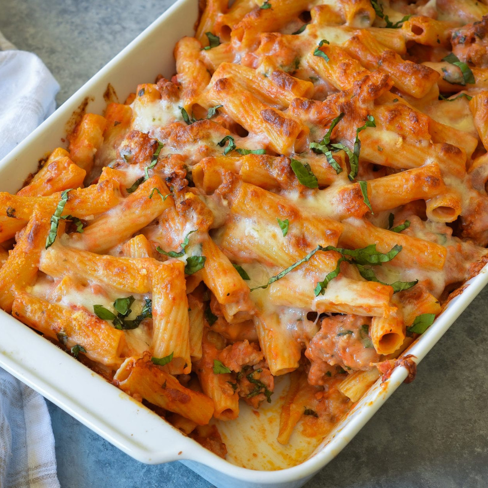

Sausage Baked Ziti

Description
This is hands down the best pasta dish there is!
I usually make it for thanksgiving or Christmas or when I want to
impress my friends
Ingredients
- Sweet Italian ground sausage 2lbs
- Ziti Noodles 1lb
- Can crushed tomatoes 28oz
- Garlic clove minced 4
- Heavy cream 1cup
- Salt 1tsp
- Sugar 1.5tsp
- Parmigiano reggiano 2/3cup
- Red pepper flakes 1/4tsp
- Fresh basil 1/3cup
- Mozzarella cheese shredded 2cups
- Large pot for pasta
- Saute pan, with a lip
- Baking dish about 9x13
Steps
- Preheat oven to 425
- Boil water and with salt in a large pot
- Boil ziti very al dente and drain, set to the side
- Heat saute pan and lightly brown sausage evenly
- Transfer sausage to a plate with a slotted spoon
- Leave about 1 tbsp of oil in the saute pan
- Reduce heat of saute pan and cook garlic until soft not browned
- Make sure you don't burn garlic
- Add crushed tomatoes, salt, sugar and red pepper flakes
- Simmer combination uncovered for 10 minutes
- Add heavy cream, 1/3 cup of the parmigiano reggiano, cooked sausage and the basil to the pan mix
- Stir combination until combined evenly
- Pour sausage combination in with the ziti pot
- Gently stir mixure
- Pour half the combination into the dish
- Sprinkle half the mozzarella cheese and half the pecorino romano
- Pour the other half of the ziti mix and add sprinkle the remaining cheeses
- Bake uncovered for 15 to 10 minutes, until cheese has browned
- Sprinkle basil and enjoy